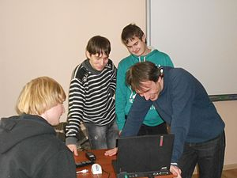

В Україні існує давня традиція суспільної праці, взаємодопомоги, піклування про ближнього. Осіб, які працювали у цій сфері, називали громадськими діячами, альтруїстами, доброчинцями, добровольцями тощо, а з кінця XX століття — волонтерами.
Волонтерську діяльність в Україні було офіційно визнано постановою >Кабінету Міністрів України
від 10 грудня 2003 року «Про затвердження Положення про волонтерську діяльність у сфері надання соціальних послуг». 2011 року Верховна Рада ухвалила закон «Про волонтерську діяльність», і ця постанова втратила чинність. | Соціальні інституції | Довіряю | Не довіряю | Баланс довіра-недовіра(різниця) |
|---|---|---|---|
| Волонетри | 57.6 | 13.5<44.1 | |
| Церква | 58.8 | 18.4 | 40.4 |
| 34.5 | 21 | 13.5 | |
| Збройні сили України | 45.3 | 32.9 | 12.4 |
| Переселенці | 24 | 25 | -1 |
| Українські ЗМІ | 32.3 | 38.9 | -6.6 |
| СБУ | 16.3 | 49.7 | -33.4 |
| Президент України | 76.8 | 21.9 | 12.3 |
Більшість респондентів висловлюють
недовіру судам і судовій системі загалом (70%), політичним партіям (68%), державному апарату (чиновникам) (67%), прокуратурі (60%), Верховній Раді України (56%), Національному агентству з питань запобігання корупції (НАЗК) (55%), Національному антикорупційному бюро (НАБУ) (54,5%), Спеціалізованій антикорупційній прокуратурі (54%), комерційним банкам (54%), Уряду (52%). Волонтери Львівської області